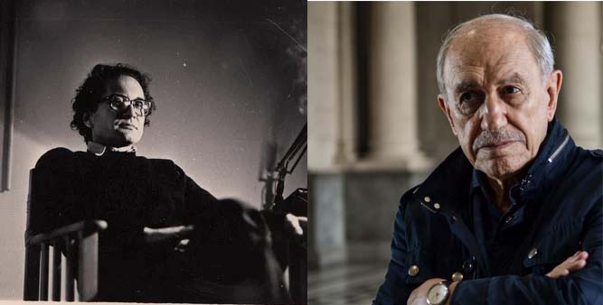
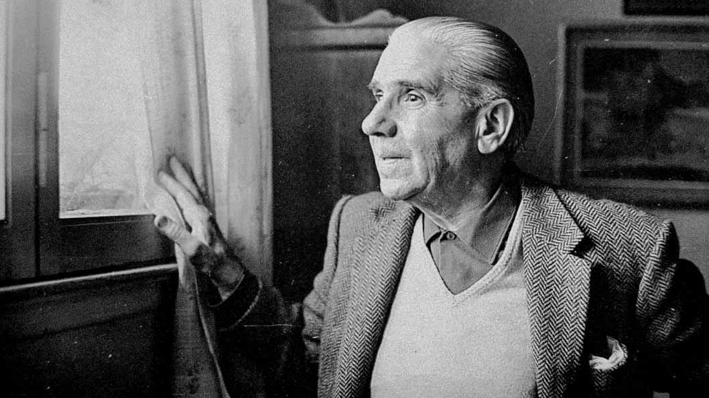

Luca Hardmeier - 20 de Mayo del 2021
Mientras más conozco sobre el tango, menos entiendo el carácter anquilosado que le quieren atribuir muchos de sus oyentes: se lo quiere conservar, se teme que la invasión cultural acabe con los pocos consumidores del género que quedan. Se habla de un patrimonio nacional y de una identidad. Se trata de seguir condicionando al humano por su lugar de nacimiento, un rebrote feudal.
Néstor García Canclini en su artículo Globalización e hibridación cultural, marca una diferencia entre los espectadores: por un lado quien simplemente consume lo que los grandes medios y su entorno social le dicen que consuma. Por el otro el espectador crítico, investigador (o con posibilidades de investigar), que hace de la curiosidad un culto. Me animo a definirlos como espectador pasivo y activo respectivamente. De esta manera Canclini logra separar la globalización de otras hibridaciones: el espectador activo no se ve afectado por ciertos procesos de globalización impuesto por los medios y su entorno (hay matices), distinguiéndolos de la hibridación nacida del intercambio cultural, que enriquece y modifica las corrientes estéticas. En su otro extremo, surge la otra cara de la moneda del espectador pasivo: el espectador conservador. Ricardo Piglia hablando de la Argentina de comienzos de siglo XX, opuso a Lugones con Discépolo; uno tradicionalista de la lengua española, otro experto en el uso del cocoliche; uno que ve a la literatura como la conservación de una cultura, otro como la mixtura perpetua de muchas.
“En 1903 Fray Mocho anunciaba el fin del tango. […] Como buen escritor costumbrista, Fray Mocho lo ignoraba todo sobre la realidad” (Ricardo Piglia, El tango y la tradición de la traición). Hace ya más de dos milenios, un nepalés decía que una de las principales causas del sufrimiento del ser humano es la transitoriedad de las cosas; el espectador que se aferra a la conservación cultural, suele ser un espectador sufrido, en constante desilusión y busca de tiempos mejores que ya no están. La conservación museística de la música es más una variante de la acumulación que del arte. Esta visión en amantes del tango es sorprendente: un género, una estética que surgió en los patios de los conventillos, que no se sabe cuántas influencias tuvo de tanta mezcla de italiano, español, árabe y criollo que hubo.
Ricardo Piglia y Néstor García Canclini, dos referentes de la crítica artística.
Y París no es menos propia que Boedo para la cultura del tango: muchos de sus poetas y músicos, estuvieron y crearon en la ciudad francesa. Negar esa identidad, por no ser un territorio argentino, es negar parte de la identidad argentina, que busca esos destinos en sus viajes, en sus exilios. París le dio un espacio al tango cuando Buenos Aires casi lo había olvidado. Es por eso que ver al resto del mundo sólo como un invasor de la cultura nacional y no como una posibilidad de interacción, nos vuelve unos paranoicos de la conservación cultural, nos imposibilita a aceptar los cambios que atraviesan todas las cosas y que mantienen vivo al arte.
Para que un día nos queden unos cuantos recuerdos: decir, estuve,
estuve en tal pasión, en tal recodo. Estuve, por ejemplo,
en la feria de Aubervilliers una mañana, con un trozo de asado,
una amistad tranquila, la mesa clara, el perro, el buen hablar
y afuera, las verduleras de París chapoteando con los zuecos en la nieve.
Para que bebamos la rubia cerveza del pescador de Schiltigheim
es necesario no asustarse de partir y volver, camaradas. Estamos
en una encrucijada de caminos que parten y caminos que vuelven.
(Raúl González Tuñón, La cerveza del pescador Schiltigheim)
El recuerdo que nos trae Tuñón -musicalizado por el Tata cedrón en 1978, curiosamente en Francia- es el de dos comunas francesas; una de donde proviene la cerveza de un pescador anónimo -que podría haber sido un apóstol- y otra de una mañana, rodeado de gente querida y en una ciudad querida. Pero la melancolía de su recuerdo, de las cosas que él quiso registrar para que no se perdieran, me llega con una intensidad insoportable, por más que no haya sucedido en el patio de mi casa.
Raúl González Tuñón, poeta al cual el Tata musicalizó muchos poemas.
Cuando se busque una identidad porteña en el tango, hay que recordar la historia del tango caminito: a todos nos remite al conocido paseo en La Boca. Entrando a la página web todotango.com se puede leer lo siguiente: “Se trataba de un poema escrito más de veinte años antes, inspirado en la ruptura de un amor de Coria Peñaloza cuando era un joven veinteañero, en el pueblo de Olta, en La Rioja, de donde era originaria su madre. En aquella ocasión, el poeta se había enamorado de una profesora de música del lugar, de nombre María, cuya identidad nunca quiso revelar, con la que mantuvo un apasionado romance. Como reacción, los familiares de la joven la enviaron a otro lugar para impedir la relación entre ambos. Coria Peñaloza escribió entonces esos versos, referidos al Caminito de Olta en el que ambos se veían.”
De esta manera podemos ver como la identificación con una obra artística muchas veces es ajena a los motivos del poeta, del creador. ¡Y negar eso nos puede llevar a la fallida conclusión de que nosotros nos identificamos con el tango porque transcurre en Buenos Aires, en Pompeya, Avellaneda y que se yo cuantos barrios más! Los nombres propios son completamente accesorios. ¡Qué importa que la historia de Don Quijote haya sucedido en La Mancha! La identidad quijotesca no tiene fronteras, no es propia de los españoles; más de una vez he sido ese caballero subido a un rocín mal alimentado intentando derrotar a los molinos.
El tango no es nuestro. Ni siquiera puedo saber en qué estarás pensando cuando leas la palabra “tango”. Se va a seguir mezclando y quizás algún día, como los madrigales, como el canto de los onas, será olvidado y seguirá viviendo bajo otras formas.
Luca Hardmeier